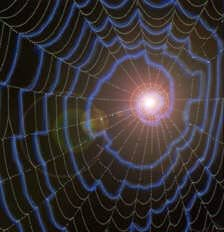

В пятом туннеле обитают безумцы. В вашем Отражении с ними обращались бы более мягко. Здесь в них тлеет искра жизни. Один из них очень любопытен. Он заявляет, что он писатель, и настаивает на том, что Амбер его произведение. Он так безумен, что утверждает, что именно он, а не Корвин, написал историю борьбы Корвина с Черной дорогой и Дворами Хаос. Но по большей части он требует встречи с принцем Корвином. Принц знает его по имени, говорит он. У нас много ненормальных, но из них он самый изумительный. Жерар считает, что нам следовало бы освободить его, но Рэндом не уверен. Если вернется Корвин, мы, естественно, спросим его совета.
Шестой туннель - дом отвратительных тварей из Отражений. Они ужасны, и мы не будем наносить им визит. Некоторые обладают гипнотической силой. Их кормит некий слепой.
Седьмой туннель ведет к Лабиринту Амбера. Огромная, темная, обитая металлом, дверь преграждает путь, но у всех членов королевской семьи есть ключ. Когда дверь открывается, можно гасить все лампы. Свет исходит из самого Лабиринта. Когда глаза привыкнут, вы увидите его в центре комнаты. Он похож на мерцающую массу изогнутых линий, врисованных в камень пола, линии дурачат взгляд, пытающихся проследить их. Жителей Амбера не королевского происхождения линии почти ослепляют; людей не из Амбера они завораживают. Для случайных посетителей комната не предназначена.
Лабиринт берет начало в дальнем углу. Идущий осторожно ступает шаг за шагом, пока, затратив огромное количество энергии, не увидит цент Лабиринта. Достигнув центра, идущий силой воли может попасть в любое желаемое место. Только те, в чьих венах течет кровь амберитов, может пройти по Лабиринту и остаться в живых.
Теперь мы вернемся в центральный проход. Из кармана я вынимаю карту. Сконцентрировавшись, на ней, я вижу лицо Мартина, дополненное прической "мохавк". Вот появляется его рука. Один за другим вы дотронетесь до руки. На секунду потеряете ориентацию, но когда все станет на свои места, то обнаружите себя у подножия лестницы, что ведет на второй этаж. Когда подтянутся все, я буду показывать замок дальше.